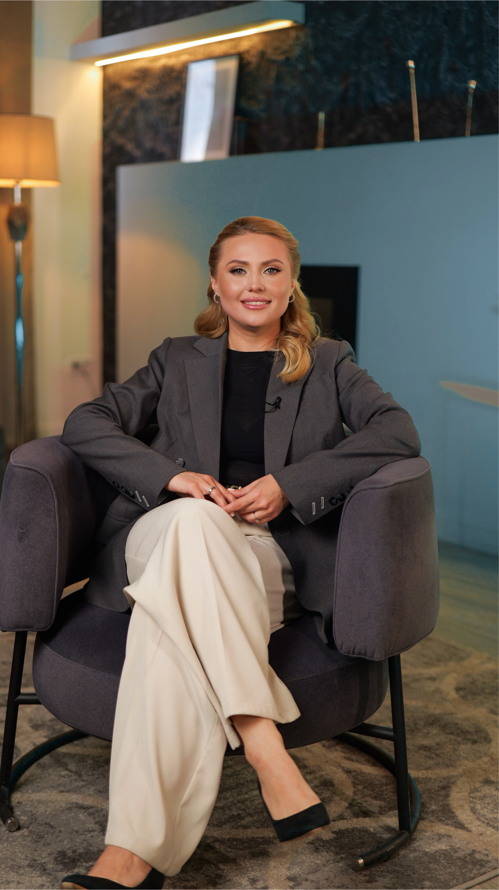

ПСИХОЛОГ У КИЄВІ ТА ОНЛАЙН
Олександра Ганкевич
Допомагаю краще розуміти себе, виходити з болісних сценаріїв і будувати стосунки, у яких є місце вашим потребам.
Кандидат психологічних наук Гештальт-терапевт Системний розстановник
Індивідуальна терапія та консультації для пар

Тут можна бути собою
ПРО ЩО МОЖНА ГОВОРИТИ В ТЕРАПІЇ
З якими запитами до мене приходять
У кожної історії свій початок. Можливо, у цих словах ви впізнаєте щось своє.
Не обов’язково мати чітко сформульований запит. Якщо вам важко, але складно пояснити чому, ми почнемо з цього.
Для кожної історії є простір бути почутою

Про мене
Я - Олександра Ганкевич(дівоче прізвище - Білик), кандидатка психологічних наук, психологиня, гештальт-терапевтка та сімейна розстановниця. У психології понад 14 років.
У своїй роботі поєдную уважність до ваших переживань із послідовним дослідженням того, що завдає болю та заважає змінам. Допомагаю помічати звичні сценарії, краще розуміти власні потреби й знаходити нові способи діяти та будувати стосунки.
Мені важливо, щоб поруч зі мною ви могли бути собою: говорити про складне, сумніватися, злитися, не мати готових відповідей. Я підтримую, ставлю запитання й допомагаю побачити те, що буває складно помітити самостійно. Ми рухаємося у вашому темпі, з увагою до ваших сил і готовності до змін.
ПРОФЕСІЙНИЙ ШЛЯХ
Освіта та досвід роботи
Професійний шлях у документах і навчанні.
ФОРМАТИ РОБОТИ
Вартість консультацій
Індивідуальна консультація
55 хвилин
2 300 ₴
Сімейна консультація
1 година 30 хвилин
3 500 ₴
Пакет із 4 консультацій
4 × 55 хвилин
8 000 ₴
Пакет - 4 сімейні консультації
4 × 1 година 30 хвилин
12 000 ₴
Можна почати з однієї консультації
Запишіться на першу зустріч, щоб познайомитися й зрозуміти, чи підходить вам такий формат роботи. Якщо після зустрічі ви вирішите обрати пакет, я зарахую першу консультацію як одну з чотирьох. Ви доплатите лише різницю між вартістю пакета й уже оплаченою консультацією.
Пакет діє 3 місяці з дати його оплати.
Про важливе простими словами
КОРИСНІ МАТЕРІАЛИ
Мій блог
Про терапію, стосунки та зміни, які починаються з розуміння себе.
СТАТТЯ 01 · ТЕРАПІЯ
Як зрозуміти, що терапія допомагає: відстежуємо прогрес
Про зміни, які можна помітити у щоденному житті, і способи оцінювати прогрес у терапії.
СТАТТЯ 02 · СТОСУНКИ
Постійно сваримося через дрібниці: як вийти із замкненого кола
Чому побутові суперечки повторюються та як почати домовлятися по-іншому.
СТАТТЯ 03 · ОСОБИСТІ МЕЖІ
Як перестати залежати від думки батьків і жити своїм життям?
Про власні рішення, особисті межі та стосунки з батьками в дорослому житті.
ВАЖЛИВЕ ПРО ТЕРАПІЮ
Перед початком терапії
Коротко про те, як я працюю
Як проходить наша робота?
На першій зустрічі ми знайомимося й говоримо про те, що вас турбує та які зміни для вас важливі. Не обов’язково заздалегідь мати чіткий запит — ми сформулюємо його разом.
Далі узгоджуємо формат і частоту зустрічей з урахуванням ваших потреб та можливостей.
Які формати терапії можливі?
- Індивідуальна терапіяробота з вашими переживаннями, стосунками та труднощами.
- Терапія для парспільна робота над взаєморозумінням, конфліктами та близькістю.
- Короткострокова робота2–6 зустрічей навколо конкретного питання.
- Довгострокова групова терапіядослідження себе та своїх способів будувати стосунки у взаємодії з іншими.
Яка тривалість зустрічі та де вона проходить?
Індивідуальна55 хвилин
Для пари1 година 30 хвилин
Зустрічі проходять онлайн або офлайн.
Конфіденційність та безпека
Я гарантую конфіденційність, дбайливий підхід та професійну етику.
У роботі використовую сучасні психотерапевтичні методи та науково обґрунтовані підходи.
Які методи я використовую в роботі?
У своїй практиці я поєдную:
- гештальт-терапію
- системні розстановки
- когнітивно-поведінкові техніки
- арт-терапевтичні інструменти
- психотерапевтичне консультування
Це дозволяє працювати не лише з симптомом, а з глибинними причинами стану, стосунків та життєвих сценаріїв.
Чи потрібно готуватися до першої консультації?
Спеціальна підготовка не потрібна. Можна прийти без чіткого запиту й почати з того, що зараз турбує. Якщо хочеться, запишіть важливі думки чи запитання, щоб не забути їх під час зустрічі.
Якщо консультація проходитиме онлайн, подбайте про безпечне й комфортне місце, де вас ніхто не турбуватиме й не чутиме вашої розмови.
Чи можу я прийти самостійно, якщо партнер не хоче?
Так. На індивідуальних зустрічах ми можемо розібратися у ваших переживаннях, потребах і тому, що відбувається у стосунках. Ви зможете краще зрозуміти, на що можете впливати, як говорити про важливе та які рішення приймати далі. Це не замінює спільної роботи пари, але дозволяє почати з себе.
Як скасувати або перенести консультацію?
Якщо ваші плани змінилися, повідомте мене щонайменше за 24 години до зустрічі — ми скасуємо її або підберемо інший час.
У разі пізнішого скасування чи пропуску консультація оплачується в повному обсязі, оскільки цей час зарезервований для вас.
Якщо виникла надзвичайна ситуація, зокрема повітряна тривога чи раптові перебої зі зв’язком, повідомте мене за можливості — домовимося індивідуально.